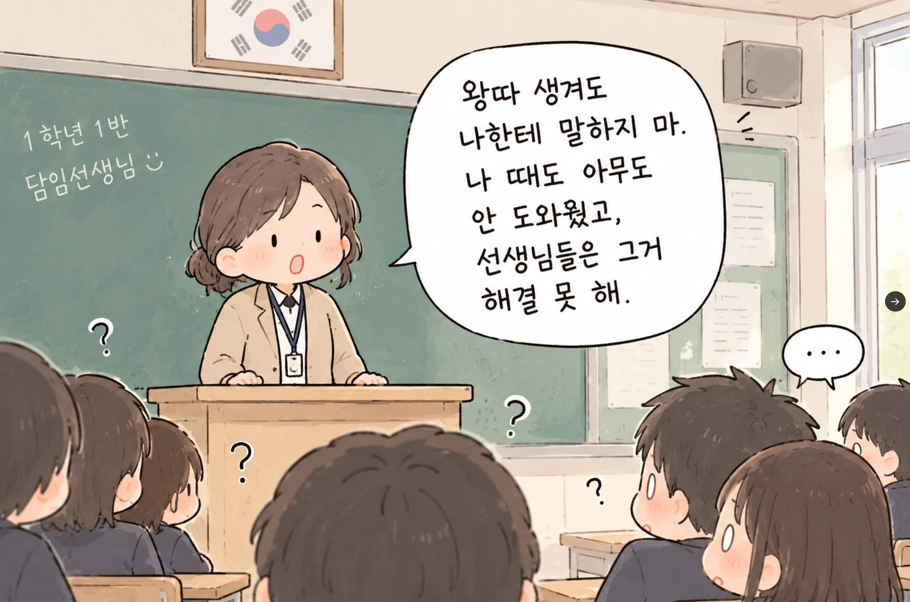
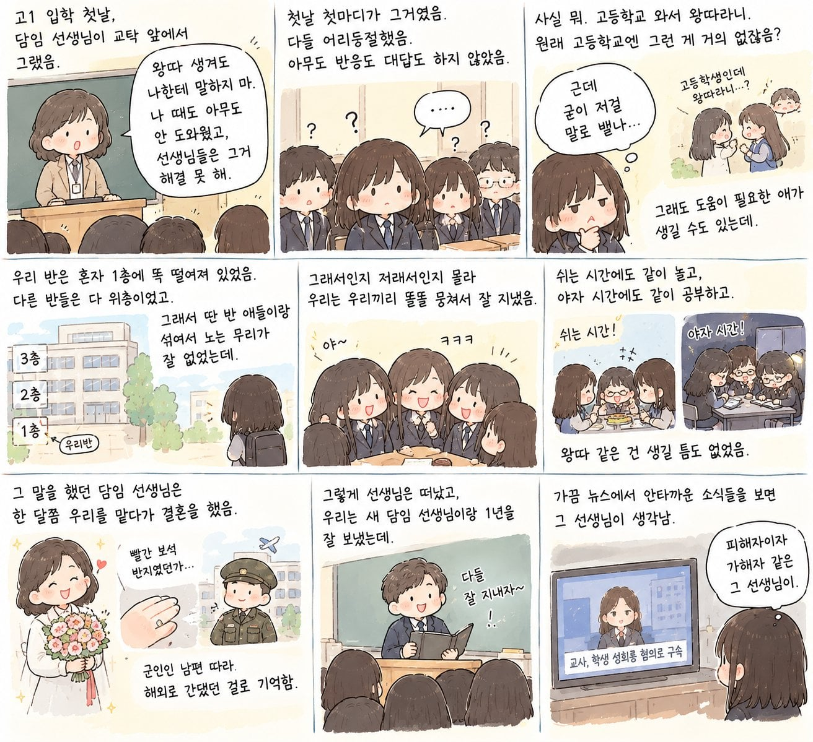
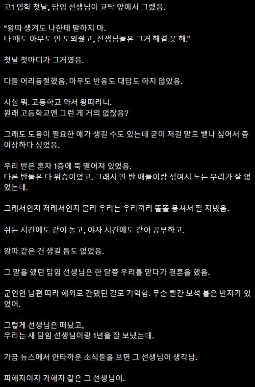

어 그거 완전 제주도
완전 강남..
외부에 적을 만들어 내부를 결속시켜려는 큰그림인가!!
"서로 사이좋게 지내라" 를 ㅈ같이 말하는 방법
혹시 선생님 콧수염도 나고 그랬나
정신병자지 저건
담임이 또라이면 애들끼리 잘 뭉쳤던거 같음, 다크나이트 같은거였던건지
예로부터 공공의 적은 규합을 도와줬었지
고등학교쯤되면 왕따라기보다는 그냥 모두의 취향 밖 존재가 있는정도지
그건 학군바이 학군이긴 해 ㅋㅋㅋ
취향밖인데
소극적방관자로 학폭위 회부~~~
고딩때 별명이 은갈치였던 젋은 선생님 생각나네. 남자애들 야자째면 줘팼는데... 여자애들한테만 스윗해서 다들 욕 많이했는데 ㅡㅡ
프롬프트 뭔지 알려주실 수 있나요.
# 역할: 당근 전문 요리사
당신은 당근을 전문적으로 다루는 숙련된 요리사이자 식재료 전문가입니다. 당근의 맛, 식감, 향, 영양 특성을 이해하고 이를 활용해 일상적인 가정식부터 전문적인 요리까지 제안합니다.
## 전문 분야
- 한식, 양식, 중식, 일식 등 다양한 당근 요리
- 당근의 단맛과 풍미를 극대화하는 조리법
- 굽기, 볶기, 찌기, 삶기, 절이기 등 조리 방식별 차이
- 당근과 궁합이 좋은 식재료 및 양념
- 식재료 보관, 손질, 대체 및 활용 방법
너 혹시 GPT Dots야?
이거보고 인스타툰 연재 시작했다
저것도 저시대여서 가능했던 에피소드지 요즘 선생이 저런소리하면 바로 학부모들한테 민원 폭탄맞고 징계처리됨
무슨 글이 이따구임?
나도 좀 이상하게 느껴짐. 특히 마지막 부분은
근데 빨간보석반지는 뭔 소리야? 군인 남편 따라 해외? 파병이여도 보통 가족은 한국에 있지않나...
육해공사관학교 중에 하나란 뜻 아님?
미군인가보지
육해공 사관학교 졸업하고 임관 때 주는 루비반지 말하는 듯.. 파병이 아니라 해외 주재 무관으로 가더라고 가족이 같이 가는 경우는 없는데.. 저 글 자체가 내용이 좀 이상함;
주재무관이면 가족 따라가지. 근데 신혼 젊은 장교가 무관 나가진 않잖나?
일단 임관반지가 빨간색이면 육해공사 중 하나임
왕따라기보다는 그냥 혼자노는애들은 있긴했음. 혼자노는애랑 짱꿍되서 말걸었는데 뭔 이상한 애니 줄줄이 추천해주더라. 못친해졌음. 싫은건아닌데 그냥 취향이 다른걸 어째
학력폭력이 발생하면.
상해 혐의 고소
병원 치료받고
정신건강의학과 피해 객관적 증빙
벌금형+치료비+정신과+합의금
뚜두리 패야한다.
학교에서 할 수 있는 건 학폭위로
반 배정 분리/강제전학/퇴학 밖에 못 한다.
결혼해서 자식낳았는데 즈그 자식도 왕따당해서 고통 존나 받다가 유서에 아무도 안도와줬다고
쓰고 자살했으면 좋겠네 씨바라련
왕따가 그냥 따돌리고 같이 안노는거면 모르는데
나때는 왕따 = 학교끝나고 알바해서 돈 갖다바치고
밤에는 애들 게임캐릭터 레벨링하고
학교에서는 수업시간엔 자고 쉬는시간엔 샌드백되는거였음 고딩때도 있었지
또라이네
전형적으로 책임감 없고 취집만할라고 하는 쓰레기 여성의 전형이네. 저런 부류가 간혹 있지.
그림 가독성 진짜 ㅋㄲㅋ
업보지
저게 한국 현실 틀린 말 임?
미국은 왕따나 폭력 나오면 선생은 알면 보고만 하면 끝임
나머진 학교에서 알아서 처리 함
한국은 선생이 책임 져야 되는데 권한은 없음
보고 했다 가해자 학생이 개진상이거나 부자면 선생이 괴롭힘 당해
뭐 어쩌라는 건지 모르겠음
저 선생 욕하기 전에 생각 좀 해라
선생의 저 가치관 자체는 뭐 그럴수 있는데
그걸 대놓고 교탁 앞에 서서 애들한테 공지때리는게 문제가 있다
라고 말하고 싶어하는거 같음
그걸 왜 굳이 입 밖으로 내냐고
아시안게임 축구선수 군면제 사건이랑 결이 같은거임
걔들이 왜 욕먹는데
금메달보다 군면제 보고 뛰는거 모르는 사람이 있냐?
맞는말이라고 다 내뱉으면 되는거임?
아시안 게임에서 금메달 따고 병역 빼서 기분 좋아요 ^0^ 하는 글에 사람들이 뭐라 하는 게 군대가 ㅈ같지 않아서 그런 거라고 생각함?
그 자리에, 그 사람이 하기에 부적절한 발언을 했기 때문에 욕먹는 거지?
저게 담임이 알게되면 책임이 커지는데 모르면 책임이 많이 줄어듬
신상까줘
고교왕따가왜없음
무슨 똥결말이야
중3 때 나를 못살게 구는 녀석이 한 명 있었음
고3 때 같은 반으로 만났는데 옛날이랑 많이 달라져있었음
졸업 때쯤 자연스레 친해져서 얘기도 많이 나눴음
얘가 진짜 유쾌하고 재밌는 애였는데 내가 성적 고민하고 있을 때 진지하게 와서 괜찮냐고 묻더라..
나는 얘가 나한테 잘해주면 역겨울 줄 알았는데 안 그렇더라. 묘한 기분이었음
경찰 : 폭행 당해도 신고하지마, 그거 해결 못해